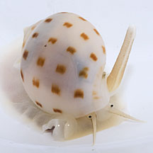
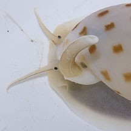
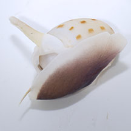
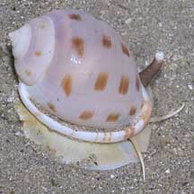
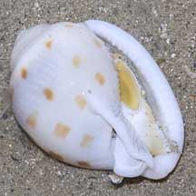
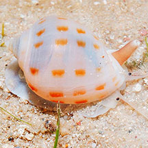

|
|
| shelled snails text index | photo index |
| Phylum Mollusca > Class Gastropoda > Family Cassidae |
| Japanese
bonnet snail Phalium/Semicassis bisulcata Family Cassidae updated Jul 2020 Where seen? This beautiful snail is sometimes seen on Cyrene and Changi, on sandy areas. Features: 5-7cm long. Shell typical helmet shape with a large body whorl and tiny spire, thus resembling a bonnet. The shell has spiral ribs, 25-40 on the body whorl. Outer lip reflected, toothed on the inner edge. White, cream, pink or blue-grey. Sometimes unmarked, sometimes with 4 or 5 spiral bands of brown spots. It has a white body and the sole of the foot is dark. The operculum is fan-shaped and pale yellow. What does it eat? According to Gosliner, it presumably feeds on heart urchins including the Tiny maretia heart urchin. |
 Cyrene Reef, Jun 12 |
 |
 |
|
 Changi, May 11 |
 Underside. |
| Japanese bonnet snails on Singapore shores |
On wildsingapore
flickr
|
| Other sightings on Singapore shores |
 Cyrene Reef, Jun 11 |
| shared by Neo Mei Lin on her blog |
|
Acknowledgements
References
|